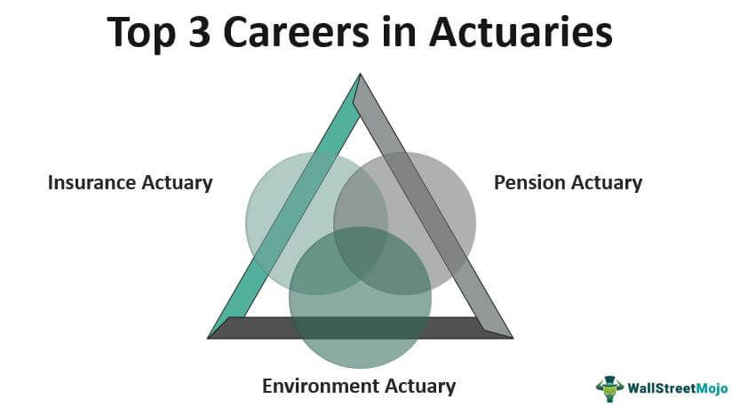

Short Bio
An aspiring actuary working on working my up to FSA, willing to develop whatever jobs skills neeccessary to perform optimally in the workforce.
Hardworking and patient with strong communication skills. Performed data managment tasks with a couple hundred observations of clinical trials
Graduating with a bachelors of science in mathematics at West Chester University.
Project #1: My school
Expierience
Montgomery County Community College Tutoring Center- I helped kids with calculas.
Wasabi Sushi-I prepped fish and vegetables to help the team prepare for service. Eventually worked my way to becoming a head chef.
Projects

Project #1: Principles of Visualization
Skills
SAS Excel R Java Data management Data analysis problem solving